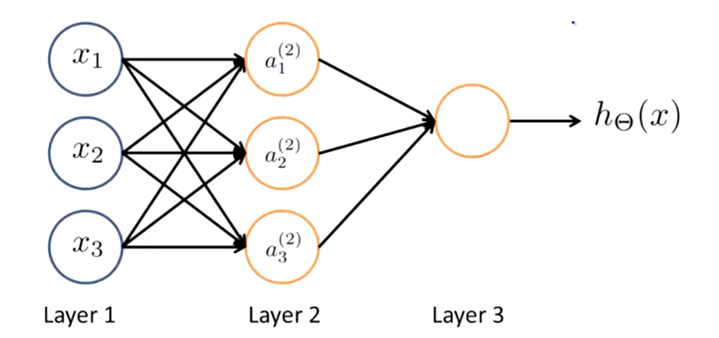
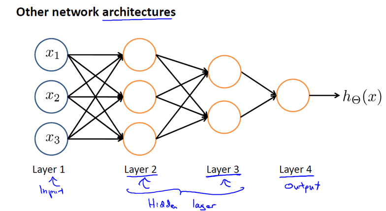

[toc]
这里开始学习神经网络，前一个视屏的结尾吴恩达教授说会线性回归和逻辑回归就超过硅谷的大部分程序员了，而且那些程序员混的还不错，听到这里当然是很开心啊，但是想视频是2011年的，七年前懂这些的确是不易了，现在是2018年了，我才开始学，是不是太迟了？
非线性假设（Non linear Hypotheses）
神经网络实际上是一个相对古老的算法，是20世纪80年代时期出现的，但是没有成为发展的热点，随着现代计算机计算能力的提升，近年来，神经网络又成为机器学习算法中的一个热点。
之前已经学习过线性回归和逻辑回归算法，为什么还要研究神经网络呢？为了阐述研究神经网络算法目的，我们首先来看几个机器学习的问题作为例子，这几个例子都依赖于复杂的非线性分类器
考虑这个监督学习的分类问题，我们已经有了对应的训练集，如果利用逻辑回归算法来解决这个问题，首先需要构造一个包含很多非线性项的逻辑回归函数，这里g仍是s型函数（即f(x)=1/(1+e^-x)）。我们能让函数包含许多像这样的多项式，当多项式的项数足够的的时候你能够得到一个分开正样本和负样本的判定边界。
例如当只有两项时比如x1和x2，这种方法确实能够得到不错的结果，因为你可以把x1和x2的所有组合都包含到多项式中，但是对于许多复杂的机器学习问题而言，设计的多项式往往多于两项。
例如我们之前讨论过的房价预测问题，假设现在处理的是关于房屋的分类问题而不是一个回归问题。假设你对一栋房子的多方面特点都有所了解，你想预测房屋在未来半年内能够被卖出去的概率，这是一个分类问题。
我们可以想到许多特征，对于不同的房子有可能有上百个特征，对于这类问题如果要包含所有的二次项，即使只包含二项式或多项式的计算，最终的多项式也可能有很多项，比如x1^2 ,x1x2 ,x1x3 ,x1x4直到x1x100,接着还有x2^2, x2x3等等很多项。因此即使只考虑二阶项，也就是说两个项的乘积x1乘以x1等等类似于此的项，那么，在n=100的情况下最终也有5050个二次项。
而且随着特征个数n的增加，二次项的个数大约以 n^2 的量级增长，其中n是原始项的个数，即我们之前说过的x1到x100这些项。事实上二次项的个数大约是（n^2）/2个，因此要包含所有的二次项是很困难的，所以这可能不是一个好的做法。
而且由于项数的过多，最后的结果可能是过拟合的，此外，在处理这么多项时也存在运算量过大的问题。当然，我们也可以试试只包含上边这些二次项的子集，例如，我们只考虑x1^2， x2^2， x3^3直到 x100^2这些项，这样就可以将二次项的数量大幅度减少，减少到只有100个二次项。但是由于忽略了太多项，在处理类似左上角的数据时，不太可能得到理想的结果。
实际上如果只考虑x1的平方到x100的平方这一百个二次项，那么你可能会拟合出一些特别的假设，比如可能拟合出一个椭圆状的曲线，但是肯定不会拟合出左上角这个数据集的分界线，所以5000个二次项看起来已经很多了。
而现在的假设还包括三次项， 例如x1x2x3, x1^2x2, x10x11x17等等，类似的三次项有很多很多，事实上，三次项的个数是n^3的量级增加。当n=100时，可以计算出来最后能得到大概17000个三次项。
所以，当初始特征个数n增大时，这些高阶多项式将以几何级数递增，特征空间也随之急剧膨胀。当特征值个数n很大时，如果找出附加项来建立一些分类器，这并不是一个好做法。对于许多实际的机器学习问题，特征个数n是很大的。
我们看看下边这个例子，这是关于计算机视觉中的一个问题。假设你想要使用机器学习算法来训练一个分类器，使他检测一个图像是否为一辆汽车。很多人可能会好奇，觉得这对计算器视觉来说有什么难的？
当我们自己看这幅图像时里面有什么事一目了然的事情，你肯定会奇怪，为什么学算法会不知道图像是什么。
为了解答这个问题，我们取出这幅图像的一部分，将其放大，比如这幅图中，汽车的门把手，红框中的部分，人肉眼看到一辆车时，计算机看到的是一个这样的数据矩阵。
它们表示了像素强度值，告诉我们图像中每个像素的亮度值。因此，对于计算机视觉来说问题就变成了，根据这个像素点亮度矩阵来告诉我们这些数值是否代表一个汽车门把手。
具体而言，当机器学习算法构造一个汽车识别器时，我们想出一个带标签的样本集，其中一些样本是各类汽车，而另一部分样本是其他任何东西。将这个样本输入给学习算法以训练出一个分类器，当训练完毕后，我们输入一副新的图片，让分类器判别“这是什么东西？”理想情况下，分类器能识别出这是一辆汽车。
为了理解引入非线性分类器的必要性，我们从学习算法的训练样本中挑选出一些汽车的图片和非汽车的图片。让我们从其中每幅图片中挑出一组像素电，例如上图像素点1的位置和像素2的位置。
在坐标系中标出这幅汽车的位置，其他坐标系中的位置取决于像素点1和像素点2的亮度。让我们用同样的方法在坐标系中标出其他图片中汽车的位置。接着我们在坐标系中继续画上两个非汽车样本。
然后我们继续在坐标系中画上更多新样本，用“+”表示汽车图片，用“-”表示非汽车图片，我们将发现汽车样本和非汽车样本分布在坐标系中的不同区域，因此我们现在需要一个非线性分类器，来尽量分开这两类样本。
这个分类问题中特征空间的维度是多少？
显然在真实情况下，我们不可能只取两个像素点来做特征。假设我们用50*50像素的图片，注意，我们的图片已经足够小了，长宽只各有50个像素，但这依然是25000个像素点，因此，我们的特征向量的元素数量 n=2500。特征向量X包含了所有像素点的亮度值。
对于典型的计算机图片表示方法，如果储存的每个像素点灰度值（色彩的强烈程度），那么每个元素的值应该在0 到255之间。因此，这个问题中n=2500
但是这只是使用灰度图片的情况，如果我们用的是RGB彩色图像，每个像素点包含红，绿，蓝三个子像素，那么n=7500。
因此，如果我们非要通过包含所有的二次项来解决这个非线性问题，那么仅仅二次项 xi * xj总共有大约300万个（2500^2/2），这个数字大的有点离谱了。对于每个样本来说，要发现并表示所有这300万个项，这个计算成本太高。因此，只是简单的增加二次项或者三次项之类的逻辑回归算法并不是一个解决复杂线性问题的好办法。因为n很大时，将会产生非常多的特征项。
接下来，我们会讨论神经网络，他在解决复杂的非线性分类问题上，被证明是一种好的多的算法，及时你输入的特征空间或输入的特征维度n很大，也能轻松搞定。
神经元和大脑（Neurons and the brain）
神经网络是一种很古老的算法，他最初产生的目的是制造模拟大脑的机器。我们将会讨论神经网络，因为他能很好的解决不同的机器学习问题，而不是只因为他们在逻辑上行的通。
神经网络产生的原因是人们想尝试设计出模拟大脑的计算。从某种意义上说，如果我们想要建立学习系统那为什么不去模拟我们所认识的最神奇的学习机器–人类的大脑的？
神经网络逐渐兴起于二十世纪八九十年代，应用的非常广泛。但由于各种原因在90年代的后期应用减少，其中一个原因是神经网络是一种计算量有些偏大的算法，但是最近神经网络又东山再起了，大概 由于近年来计算机的运行速度变快，才足以真正运行起大规模的神经网络。
正式由于这个原因和其他一些我们后面会讨论的技术因素，如今的神经网络对于许多应用来说是最先进的技术。
当你模拟大脑时，是指想制造出于人类大脑效果相同的机器。大脑可以学会去看而不是听的方式处理图像，学会处理我们的触觉。我们能学习数学，学习计算微积分，而且大脑能处理各种不同的令人惊奇的事情。似乎如果你想要模仿它，你需要写许多不同的软件来模拟所有大脑告诉我们这些五花八门的奇妙的事情。
如果假设大脑处理所有这些不同事情不需要上千个程序去实现他，相反，大脑只需要一个简单的学习算法就可以了呢？
尽管这只是一个假设，不过让我和你分享一些这方面的证据。
如图大脑这个部分，这一小片红色区域是你的听觉皮层，如果你通过我说的话来理解我表达的内容，那么是靠耳朵接收到声音信号并把声音信号传递给你的听觉表皮层，正因如此，你才能明白我的话。
神经系统科学家做了一个有趣的实验，把耳朵到听觉表皮的神经切断。在这种情况下，将其重新接到一个动物的大脑上，这样从眼睛看到的视觉神经的信号最终将传到听觉表皮层，结果表明，听觉表皮层将会学会“看”。
所以，如果你对动物这样做那么动物就可以完成视觉辨别任务，他们可以看图像，并根据图像做出适当的决定。它们正是通过脑组织中的这个部分完成的。

下面在举另一个例子，这块红色的脑组织是你的躯体感觉皮层，这是你用来处理触觉的。如果你做一个和刚才类似的重接实验，那么躯体感觉皮层也能会“看”，这个实验和其他一些类似的实验被称为神经重接实验。从这个意义上说，如果人体有同一块脑组织可以处理光、声或触觉信号，那么也许存在一种学习方法可以同时处理视觉，听觉和触觉，而不是需要成千个不同的程序或者算法来做这些。
大脑能够完成的成千上万的事，我们需要做的就是找出一些近似的或实际的大脑学习算法，然后实现它，大脑通过自学掌握如何处理这些不同类型的数据，在很大程度上可以猜想，如果我们把任何一种传感器接到大脑的任何一个部位，大脑就会学会处理它。
再看上图的几个例子，左上角这张图是用舌头学会“看”的一个例子。这实际上是一个名为BrainPort的系统，他现在正在FDA（美国食品药物管理局）的临床试验阶段，他帮助失明人士看见事物。他的原理是，在你前额戴上一个灰度摄像头，他能够获取你面前的事物的低分辨率的灰度图像。你连接一根线到舌头上安装的电极阵列上，那么每个像素都被映射到你舌头上的某个位置。可能电压值高的点对应一个暗像素，电压值的点对应亮像素。
即使依靠它现在的功能，使用这种系统就能够让人在几十分钟里学会用我们的舌头看东西。
下面是第二个例子，关于人体回声定位或者说人体声纳。你有两种方法可以实现，你可以弹响指或者咂舌头。现在有失明人士确实在学校里接受这样的培训，并学会解读从环境反弹回来的声波模式—这就是声纳。
如果你搜索 YouTube 之后，就会发现有些视频讲述了一个令人称奇的孩子，他因为癌症眼球惨遭移除，虽然失去了眼球，但是通过打响指他可以四处走动而不撞到任何东西。他能滑滑板，他可以将篮球投入篮框中。
第三个例子是触觉皮带，如果你把它戴在腰上，蜂鸣器会响，而且总是朝向北时发出嗡嗡声。它可以使人拥有方向感，用类似于鸟类感知方向的方式。
还有一些离奇的例子，如果你在青蛙身上插入第三只眼，青蛙也能学会使用那只眼睛。
因此，这将会非常令人惊奇。如果你能把几乎任何传感器接入到大脑中，大脑的学习算法就能找出学习数据的方法并处理这些数据。从某种意义上来说如果我们能找出大脑的学习算法，然后在计算机上执行大脑学习算法或与之相似的算法，也许这将是我们向人工智能迈进做出的最好的尝试。
模型表示（Model Representation）
神经网络是在模仿大脑中的神经元或者神经网络时发明的。因此，要解释如何表示模型假设，我们不妨先来看单个神经元在大脑中是什么样的。
我们的大脑中充满了如上图所示的这样的的神经元，神经元是大脑中俄细胞，其中有两点值得我们注意，一是神经元有像这样的细胞主题（Nucleus），二是神经元有一定数量的输入神经和输出神经。这些输入神经叫做树突（dendrite），可以把他们想象成输入电线，他们接受来自其他神经元的信息。神经元的输出神经焦作轴突（Axon），这些输出神经是用来给其他神经元传递信号或者传递信息的。
简而言之，神经元是一个计算单元，他从输入神经接受一定数目的信息，并做一些计算，然后将结果通过他的轴突传送到其他节点或者大脑中的其他神经元。
下面是神经元的示意图：
神经元利用微弱的电流进行沟通。这些弱电流也称作动作电位，其实就是微弱的电流。所以如果神经元想要传递一个消息，他就会通过它的轴突发送一段微弱电流给其他神经元。
上图中，黄色的圆圈就代表了一个神经元，X为输入向量，θ代表神经元的权重（就是我们之前所说的模型参数），hθ(x)代表激励函数（在神经网络术语中，激励函数只对类似非线性函数（g(z)的另一个术语称呼，g(z)等于1除以1加e的-z次方）。
实际上你可以这样理解，神经元就是权重θ。
当将输入送进神经元后，经计算（就是X^Tθ）会有一个输出，这个输出再送进激励函数中，便得到了神经元的真实输出。
注意：当我们绘制一个神经网络时，通常我会只绘制节点x1,x2,x3等等，但有时可以增加一个额外的节点x0，这个x0节点有时被称作偏置神经元。但因为x0总是等于1，去哦们会画出它，有时我们不会画出，这要看画出他是否对例子有利。

神经网络就是不同的神经元组合在一起，第一层为输入层，最后一层为输出层，而且中间的所有层均为隐藏层。
注意：输入单元x1，x2，x3，再说一次，有时也可以画上额外的节点x0.同时，这里有三个神经元，我在里面写了a1(2) 、 a2(2) 和a3(2) ,然后再次说明这里我可以添加一个a0(2) ，这和x0一样，代表一个额外的偏度单位，它的值永远是1，注意：a1(2) 、 a2(2) 和a3(2)中计算的是g（X^Tθ）的值，而a0(2)中存放的就是偏置1。
如果一个网络在第j层有sj个单元，在j+1层有sj+1个单元，那么矩阵θ(j)即控制第j层到第j+1层的映射。
矩阵θ(j)的维度是s(j+1)*(sj+1),s(j+1)行，(sj+1)列
总之，上面的图展示了是怎样定义一个人工网络的。这个神经网络定义了函数h:从输入x到输出y的映射。我将这些假设的参数记为大写的θ，这样一来不同的θ对应不同的假设，所以我们有不同的函数，比如说从x到y的映射。
以上就是我们怎么从数学上定义神经网络的假设
下面将讲解如何高效的进行计算，并展示一个向量化的实现方法，更重要的是让你明白这样表示神经网络是一个好方法，并且明白它们怎样帮助我们学习复杂的非线性假设

以前我们说过计算出假设输出的步骤，通过左边的这些方程计算出三个隐藏的单元的激励值，然后利用这些值来计算假设函数h(x)的最终输出，接下来我要定义一些额外的项，因此，上图中蓝色线的项把他定义为z上标（2）下标1，这样一来就有了a(2)1 这个项，等于g(z(2)1)(上标2的意思是与第二层相关，即神经网络的隐藏层有关)接下来画红线的项同样定义为z(2)2，最后一项定义为z(2)3，这样我们就有a(2)3=g(z(2)3)，所以这些Z的值是线性组合，是输入值x1,x2,x3的加权线性组合，他将进入一个特定的神经元，类似于矩阵向量的乘法。
现在看一线灰色框里的一维数组，你可能会注意到这一块对应了矩阵向量的运算x1乘以向量x，观察到这一点我就能够将神经网络的运算向量化，具体而言我们定义特征向量x为x0,x1,x2,x3组成的向量，其中x0=1，并定义z^2为
这些值组成的向量，注意：这里的Z(2)是一个三维向量。
下面我们可以这样向量化1(2) 、 a2(2) 和a3(2)的计算我们只用两个步骤z(2)等于θ(1)乘以x，然后a(2)等于g(z(2))，需要明白的是这里的z(2)是一个三维向量，并且a(2)也是一个三维向量因此这里的激励将s函数逐元素作用于z(2)中的每个元素z(2)就等于θ(1)乘以a(1)。当然x也有偏置单元x0，
顺便说一下，为了让我们的符号和接下来的工作一致，在输入层，虽然我们有输入x但是我们还可以把这些想成是第一层的激励，所以我们可以定义第一层的激励a(1)=x,因此a(1)就是一个向量了，我们可以把这里的x替换成a(1)
现在我们得到了a1，a2，a3的值，但是我们同样需要一个值a0，他对应隐藏层得到这个输出的偏置单元，这时a(2)就是一个四维的特征向量。
为了计算假设的实际输出值h，我们只需要计算z(3),z(3)等于绿色框框中的项目，最后假设函数h(x)输出他等于a(3),a(3)是输出层唯一的单元，他是一个实数。
这个h(x)的计算过程也成为向前传播(forward propagation),这样的命名是因为我们是从输入层的激励开始，然后进行向前传播给隐藏层，并计算隐藏层，然后我们继续向前传播，计算输出层的激励，这个从输入层到隐藏层再到输出层一次计算激励的过程叫向前传播。
我们刚刚得到了这一过程的向量化实现方法，如果用右边的公式计算，会得到一个有效的计算h(x)的方法
这种向前传播的角度，可以帮助我们了解神经网络的原理，帮助我们学习非线性假设
看上面这幅图，我们先盖住图片左边的部分，如果只看右边，这看起来很像逻辑回归，在逻辑回归中我们用最后一个节点，也就是最后一个逻辑回归单元来预测h(x)的值，具体来说，假设输出的h(x)等于s型激励函数g(Θa1+Θa2…)。其中a由那三个单元一样，为了和我们之前的定义保持一致，需要添加红色的上标和下标1，因为我们只有一个输出单元，但如果你只观察蓝色的部分，这看起来非常像标准的逻辑回归模型，不同之处在于，我现在用的是大写的Θ，而不是小写的Θ，这样做完我们只得到了逻辑回归，但是逻辑回归输入特征值是通过隐藏层计算的。
再说一遍，神经网络所做的就像逻辑回归，但是它不是使用x1，x2，x3作为输入特征，而是用a1，a2，a3作为新的输入特征，同样的我们需要把上标加上来和之前的记号保持一致，有趣的是特征值a1，a2，a2是当做输入函数来学习的，具体来说，就是从第一层映射到第二层的函数，这个函数由其他一组参数θ(1)决定，而在神经网络上，他没有用输入特征x1，x2，x3，来训练逻辑回归而是自己训练逻辑回归的输入a1，a2，a3，可以想象，如果在θ1中选择不同的参数，可以学习一些很有趣和复杂的特征，就可以得到一个更好的假设，比使用原始输入x1，x2或x3时得到的假设更好。
你也可以x1，x2，x3等作为输入项，但是这个算法可以灵活的快速学习任意的特征项，把这些a1，a2，a3,输入这个最后的单元，实际上他是逻辑回归。

还可以用其他类型图表示神经网络，神经网络中神经元相连接的方式，称为神经网络的架构，所以架构是指，不同的神经元是如何相互连接的，这里有个一不同的神经网络架构的例子，你可以意识到这个第二层是如何工作的，我们有三个隐藏单元，它们根据输入层计算一个复杂的函数，然后到第三层，我们可以将第二层训练出的特征项作为输入，并在第三层计算一些更复杂的函数，这样你在第四次，即输出层时，就可以利用第三层训练出的更复杂的特征项作为输入，以此得到非常有趣的非线性假设。顺便说下，在这个网络中，第一层被称为输入层，第四层仍然是我们的输出层，这个网络有两个隐藏层，所以都被称为隐藏层任何一个不是输入层或者输出层的。
示例和直觉（Examples and Intuitions）
接下来讲解两个例子来说明神经网络是如何计算的。
关于输入的复杂的非线性函数，希望这个例子可以让你了解，神经网络可以用来学习复杂的非线性假设
我们有x1，x2要么取0要么取1，所以x1和x2只能有两种取值，在这个例子中，我只画出了，两个正样本和两个负样本，你可以认为这是一个复杂样本的简单版本，咋这个复杂问题中，我们可能在右上角有一堆正样本，和左上角一堆用圈圈表示的负样本，我们想要学习一种非线性的决策边界来区分正负样本。
我们用左边的例子来说明，具体来讲我们需要计算的是目标函数y等于x1异或x2，或者y也可以等于x1异或非x2，其中异或非表示x1异或x2后取反，x1异或x2为真当且仅当这两个值，x1或者x2中有且仅有一个为1，如果我用xNOR的例子比用NOT作为例子结果会好一些，但这两个其实是相同的，这就意味着在x1异或x2后再取反，即他们同时为真或者同时为假的时候，我们将会获得y等于1，y为0的结果是，如果他们中仅有一个为真，则y为0。
我们能否找到一个神经网络模型来拟合这种训练集，为了建立能够拟合XNOR运算，我们先拟合一个简单的神经网络，它拟合了“且运算”。
假设我们有输入x1，x2都是二进制，即要么是0要么是1，我们的目标函数y等于x1且x2，一个逻辑与运算，那么我们怎样得到一个具有单个神经元的神经网络来计算这个逻辑与呢？
我们给这个网络分配一些权重或参数，-30，+20，+20，即我们给x的前面系数赋值，所以我们的h(x)=g(-30+20x1+20x2),右上角的图就是我们的s型函数，然后我们看四种输入的可能性，就是与运算的结果。
同样我们用神经网络实现或运算然后讲解更为赋值的神经网络。
我们只要在x1前面放入一个很大的负数，就可以实现非的功能。
我们现在把这三个功能放在一起，就可以实现x1 XNOR x2的功能。
当层数很多的时候，你有一个相对简单的输入量的函数作为第二层，而第三层可以建立在此基础上建立一些更加复杂的函数，然后在下一层又在计算一个稍微复杂的函数，我们可以运用更深层的函数计算更加复杂的函数。
神经网络还可以用于识别手写数字。
它使用的输入是不同的图像或者说就是一些原始的像素点。第一层计算出一些特征，然后下一层再计算出一些稍复杂的特征，然后是更复杂的特征，然后这些特征实际上被最终传递给最后一层逻辑回归分类器上，使其准确地预测出神经网络“看”到的数字。
多类分类（Multiclass Classification）
在多分类问题中我们如何处理？
和处理逻辑回归的多分类问题一样。